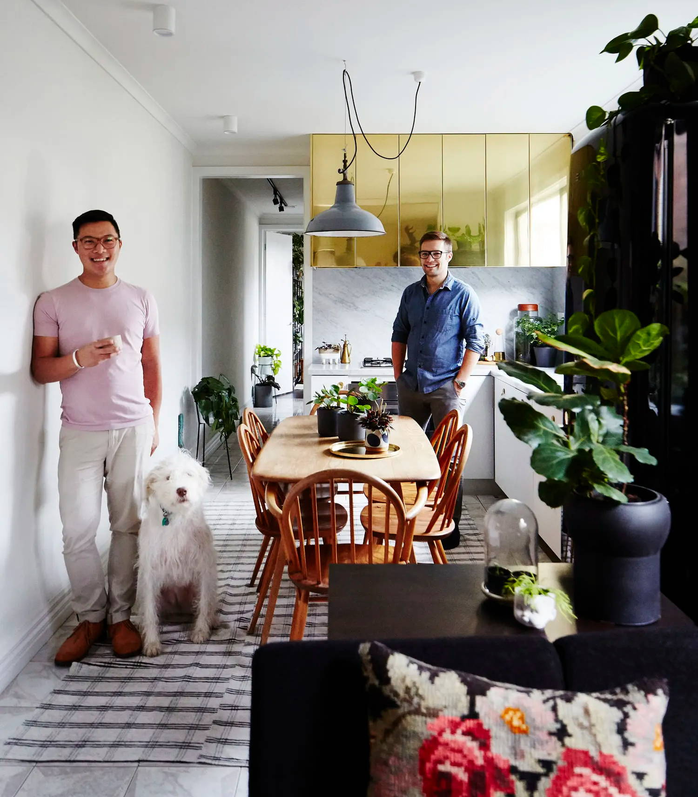

Established in August 2016 by Jason Chongue and Nathan Smith,
The George's Garden Center was born from a passion to green our city. A love that has been supported by the community not only in Melbourne but across Australia and to the globe.
We now lead and mentor our growing team at The Plant Society, in our Melbourne and Sydney studios and stores. We continue to nurture a vast range of plant projects across Australia, promoting positive and open conversations about gardening and greenery not only indoors but in compact outdoor environments.
Our focus on community and honest relationships has seen us work with some prestigious brands and unique spaces, both designing and nurturing on a regular basis.